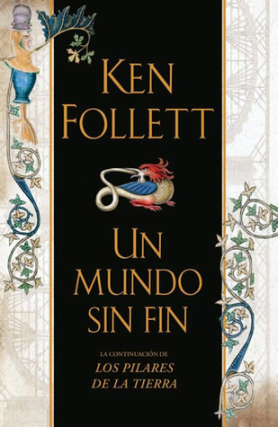

Un mundo sin fin
Reseña por Jorge I. Zuluaga

Ver reseña en GoodReads (necesita cuenta)
Durante el tiempo transcurrido entre los dos libros, en el mundo de ficción inventado por Follett, no solo se evidencia el cambio de algunas tecnologías de construcción (la arquitectura sigue siendo una protagonista), sino también algunas innovaciones sociales, políticas y económicas. En el mundo real, por otro lado, y al menos para mí, se siente también un cambio en la literatura de Follett.
De los personajes relativamente "transparentes" de la primera novela (personajes cuyas intenciones son claras y normalmente consistentes), presenciamos en "Un mundo sin fin" el nacimiento de un conjunto de figuras con personalidades más complejas, en los que se conjugan, como en los seres humanos reales, personalidades ambiguas; personas capaces de trabajar desinteresadamente por sus seres queridos y, al mismo tiempo, matar sin remordimientos. Nobles asesinos y brutales que hacen lo que sea por sus hijos y pueden llegar a sentir algún remordimiento. En fin, muchas veces me encontré preguntándome si este o aquel personaje era "bueno" o "malo", un buen indicio de cómo la literatura empieza a acercarse más a la realidad.
Una de las cosas que me ha gustado de esta segunda novela de la trilogía de Kingsbridge es que, si bien la historia se desarrolla en un lapso de tiempo más corto que en la primera (cubre solo una generación, entre 1327 y 1361, o sea, aproximadamente 34 años, mientras que "Los pilares de la Tierra" abarcan aproximadamente dos generaciones, entre 1123 y 1174, o 51 años), los personajes, como lo mencioné antes, son mucho más profundos. En aproximadamente el mismo espacio (en realidad, esta segunda novela es un poco más larga que la primera), Follett alcanza a desarrollar en todo detalle la personalidad de un grupo único de personajes centrales. Esto le permite profundizar más en sus personalidades y contradicciones, y los hace, por la misma razón, más humanos.
Estoy seguro de que, si se le permitiera, Follett sería capaz de narrar la vida de 20 o 30 generaciones sin mayor dificultad. Como no soy escritor, siento gran admiración por las personas que, como él, son capaces de "inventar" historias de vida completas y de describirlas hasta los detalles más pequeños; aún más difícil: en un tiempo completamente ajeno al nuestro.
Lo mejor de este segundo libro: su protagonista, Caris.
En este personaje creo que Follett busca hacer un muy justo homenaje a las decenas de miles, si no millones, de mujeres que durante toda la Edad Media vivieron y murieron a la sombra de hombres violentos y arrogantes, en una sociedad patriarcal que encontraríamos, incluso ahora, bastante insoportable (a pesar de que la nuestra tampoco ha dejado de ser una sociedad machista).
Follett logra construir una novela alrededor de una mujer inteligente, escéptica e independiente. Para no arruinarles las sorpresas de la novela, solo déjenme decirles que es difícil no enamorarse de una mujer así.
Como en la primera novela de la trilogía, "Un mundo sin fin" gira también alrededor de la arquitectura. En esta ya no es solamente la catedral de Kingsbridge (aunque no deja de ser una protagonista muy importante), sino también otros edificios innovadores no eclesiásticos y, muy especialmente, un nuevo puente: justamente aquel que reemplazará al puente que da el nombre a la población, "King's Bridge". La descripción del diagnóstico de los problemas del antiguo puente, del diseño y de la construcción del nuevo es sencillamente magistral: ¡porno para arquitectos!
Como lo mencioné en la reseña de "Los pilares de la Tierra", lo mejor de la novela histórica, y en esto Follett es un maestro, es la posibilidad de transportarnos a un tiempo perdido en la historia. Reinos perdidos y olvidados por la mayoría. Conocer, a través de relatos muy humanos que le sacarán una lágrima a más de uno, cómo vivía la gente en la Baja Edad Media, sus costumbres diarias, lo que comían y bebían, las relaciones amorosas y sexuales, pero también la economía, la política y hasta el sistema judicial. La mayoría, en el contexto de historias de ficción que se confunden (para crear la sensación de que realmente estás escuchando a un cronista) con hechos históricos, como la epidemia de peste negra que mató a la mitad de la población de Europa justamente durante el tiempo en el que se desarrolla la obra, y que en la novela está descrita de forma increíblemente patética (más de una vez me pareció sentir la sed insaciable o la rasquiña de los enfermos de peste que se suceden uno detrás de otro durante la novela); son también reales los personajes de la realeza y algunos de los conflictos que lideran, no solo entre ellos, sino también con otras naciones.
En fin.
Antes de leer "Un mundo sin fin", tenía un poco de miedo de que la expectativa creada con "Los pilares de la Tierra" me hiciera juzgar esta novela muy duramente. Se trata de dos historias que se desarrollan en el mismo lugar geográfico, pero con personajes muy distintos. No podría decir cuál de los dos libros me ha gustado más, pero creería que en términos de creación literaria "Un mundo sin fin" es mejor que "Los pilares de la Tierra".
Léanla ustedes mismos para comprobar o rechazar lo que digo.